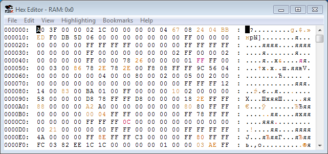
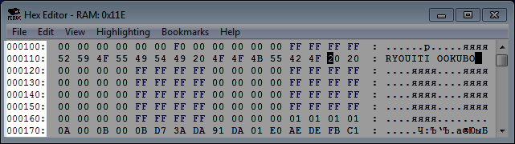
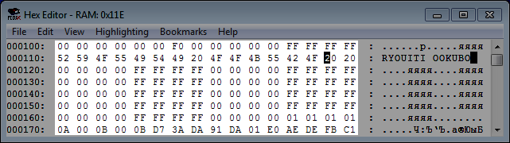
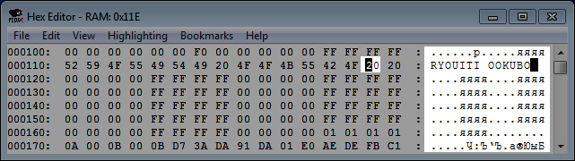
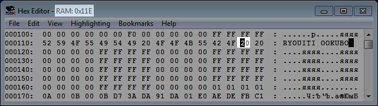
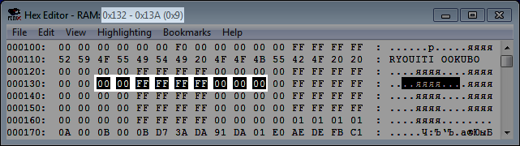

Содержание
Окно открывается в эмуляторе FCEUX в Debug -> Hex Editor (или горячей клавишей). Если ROM не запущен в эмуляторе, окно открыть не получится.

Окно автоматически закрывается при закрытии ROM'а.
Hex Editor отображает данные игры на текущий момент. Обновление происходит ежекадрово в конце кадра.
Данные дополнительно будут обновляться каждый раз, когда Debugger ставит эмулятор на паузу, например после срабатывания брейкпоинта или при нажатии в нем определенных кнопок.
Исключением ежекадрового обновления является область View -> ROM File. Она обновляется только при взаимодействии пользователя с окном Hex Editor.
Байт, который после обновления окна изменил свое значение относительно предыдущего значения, имеет цветную подсветку. Это помогает отследить любые изменения, в частности при просмотре адресов RAM.
Подсветку байтов можно настроить во вкладке Highlighting.
Если эмулятор стоит на паузе, можно сбросить текущую подсветку байтов, если прокрутить содержимое окна вверх/вниз колесом мыши или ползунком справа.
Байты можно выделять, а также копировать/вставлять через Ctrl + C/Ctrl + V (или через вкладку Edit).
Еще байты можно изменять вручную, это приведет к различным последсвтиям, которые будут описаны в подразделах.
Если ввести только 1 символ байта, это не изменит байт в адресе. Отменить такой ввод нельзя, даже кликнув по другому адресу, и он будет висеть до тех пор, пока ты не введешь второй символ. Если переключиться на другой адрес и ввести второй символ, то байт запишется в этот самый адрес, а не в тот, куда ты собирался записать его изначально.
По умолчанию открыто View -> NES Memory, где отображена память процессора. Слева находятся начальные адреса строки.

В середине в каждой строке по 16 адресов, в каждом адресе 1 байт.

Переменные в адресах при запуске ROM'а зависят от опции эмулятора Config -> RAM Init.
Справа отображена кодировка байтов, по умолчанию ASCII. Выбранный адрес подсвечивается черным и в кодировке справа.

Кодировку можно изменить, подготовив .tbl файл и подгрузив его через File -> Load *.TBL File.
Символы кодировки можно копировать из кодировки и вставлять обратно. Если вставить символы кодировки по адресам, это будет расценено как вставка байтов, и лишние символы будут удалены.
Копировать символы кириллицы из этой области нужно со включенной русской раскладкой клавиатуры, иначе будут скопированы кракозябры. Отправил багрепорт разработчику.
Выбранный адрес отображается в названии окна (без лишних нулей слева и с префиксом 0x), а также указан тип памяти этого адреса, в зависимости от режима вкладки View и самого адреса.

При выделении мышкой сразу нескольких адресов, в названии окна будет указан выделенный диапазон адресов, а в скобках - количество выделенных адресов в системе счисления HEX.

Количество выделенных адресов можно использовать для определения байта, который нужно записать в качестве операнда у команды условного перехода.